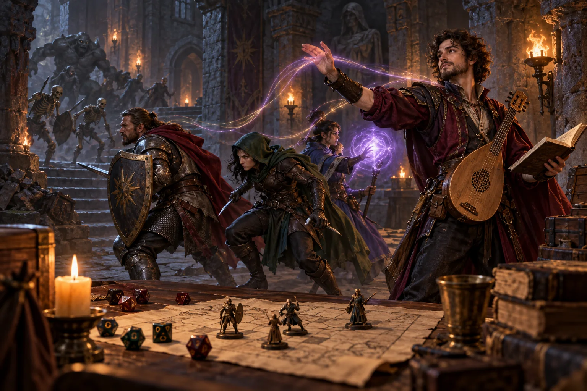

A Bard is often described as the party's musician, but that label is too narrow. Mechanically, the class is a flexible problem solver. A Bard can strengthen an ally at the right moment, influence a difficult conversation, control several enemies, cover missing skills, and still contribute when the plan changes. The class rewards players who watch the whole table rather than waiting for one signature attack.
This guide focuses on decisions that remain useful across adventures: defining your party job, protecting concentration, choosing spells by purpose, and spending Bardic Inspiration where it can change an outcome. If you are planning a retail product line around Bard, Wizard, Rogue, Paladin, or Druid themes, our character class dice page shows how class identity can become a consistent wholesale RPG dice collection.
Bard 5e at a glance
A Bard is a full spellcaster with a strong social profile, broad skill access, and a resource that directly improves another character's roll. That combination creates a class that can change plans quickly, but it also creates a real decision cost: every spell, skill, and inspiration die should have a job. The following snapshot describes the familiar 2014-style progression; confirm feature wording and level timing for the updated rules used by your group.
| Campaign tier | What the Bard is building | Practical priority |
|---|---|---|
| Levels 1-2 | Core support, cantrips, skills, and survival | Keep one emergency option, one reliable combat fallback, and enough defense to stay active. |
| Levels 3-4 | A Bard college and a clearer party identity | Choose whether your table role is controller, expert, mobile support, social specialist, or weapon user. |
| Levels 5-10 | Stronger inspiration, higher-level spells, and reliable encounter control | Protect concentration, improve action economy, and replace narrow spells that rarely fit the campaign. |
| Levels 11+ | High-impact magic and long-term specialization | Spend major slots on problems that change an encounter, an escape route, or a story objective. |
Why play a Bard in 5e?
Choose a Bard if you enjoy options. Your best turn might be a spell, an inspiration die, a weapon attack, or a clever skill use. That flexibility becomes unfocused when a player tries to do everything equally well. Begin with one question: what job should I perform when the party is under pressure?
Common answers include battlefield controller, social specialist, mobile support character, knowledge expert, or weapon-using skirmisher. You can support more than one job, but naming a primary role makes every later choice easier. It guides ability scores, college selection, spells, equipment, and even where you stand during combat.
First, choose your ruleset: 2014 5e or updated rules
The 2014 and updated Bard share a broad identity, but important details differ. Updated Bardic Inspiration can be used after a failed d20 test. Feature wording, Countercharm, subclass choices, and Magical Secrets also changed.
Both versions can support an excellent character. The important step is consistency. Use the class table, spell list, subclass, and feature wording approved by your Game Master. When a guide recommends a spell or combination, check that the option exists in your chosen rules source. The official free Bard rules and the official Bard rules comparison are useful starting points.
Bard ability scores and skills
Charisma is the normal first priority. It supports Bard spellcasting and commonly selected interaction skills. A higher Charisma improves the reliability of the actions that define most Bard builds. Unless you have a deliberate unusual concept, raise it before spreading points across several secondary abilities.
Dexterity is a practical second priority for Armor Class, initiative, common finesse or ranged weapons, and useful skills such as Stealth. Acting earlier matters to a controller because preventing an enemy turn is often more valuable than repairing damage later. Constitution supports hit points and concentration. A Bard maintaining an important spell should avoid unnecessary damage and value every improvement to concentration reliability.
Bard level-by-level priorities
A complete Bard build is easier to manage when each level has a practical question attached to it. This keeps the character useful during the campaign instead of optimizing only for a final-level concept.
Early levels: survive, contribute, and learn the table
At low levels, a Bard has limited spell slots and a small margin for error. Prioritize Charisma, keep a defensive plan, and learn which allies regularly make decisive rolls. A bonus-action recovery spell, a flexible cantrip, and a social or exploration tool can be more valuable than a list filled with narrow damage effects. Use the first sessions to identify whether your party needs another controller, a negotiator, or a character who can stabilize a difficult fight.
Middle levels: specialize without losing flexibility
Once the party has more resources, choose spells and features that reinforce your main job. A controller should improve placement, saving throw coverage, and concentration protection. A weapon-oriented Bard should evaluate reach, armor, mobility, and how their actions interact with inspiration and spellcasting. A social Bard should build information, language, disguise, and escape options rather than assuming every problem can be solved by one Charisma check.
Higher levels: change the shape of the encounter
At higher levels, the best Bard turn may remove a major enemy from the fight, move several allies out of danger, reveal the answer to a mystery, or turn a negotiation into a campaign-level advantage. High-level spell slots are limited, so look for effects that create multiple rounds of value or solve a problem the party cannot solve with ordinary actions. When Magical Secrets or another expanded spell choice becomes available, fill a real party gap before chasing a famous combination.
Use Bardic Inspiration when the result matters
Bardic Inspiration is not just a bonus die. It is permission for another player to attempt something important with greater confidence. Give it to the character who is likely to make a decisive roll: the defender resisting a dangerous effect, the scout attempting a critical check, or the attacker whose hit could remove a major threat.
Timing depends on ruleset, so read the feature exactly. The broader strategic lesson is stable: do not spend inspiration merely because it is available. Spend it when failure has a meaningful cost or when success creates a strong advantage for the whole party. Before the session, decide how you will track uses. A separate group of d6 dice works well because moving one die from an available area to a spent area is faster than editing a note during combat.
When you grant the die, state its size and timing rule. At higher Bard levels the die grows, so matching the physical tracking dice to its current size prevents forgotten or incorrect bonuses.
Build a Bard spell toolkit by job
The best Bard spells are not simply the entries with the highest damage. Bards usually gain more value by changing what creatures can do, improving an ally's chance of success, or solving a problem that would otherwise consume time and resources. Think in jobs rather than rankings.
1. Keep one dependable support option
A support spell should answer an urgent problem without consuming your entire plan. Check its action type, range, and concentration requirement. A powerful spell can still be awkward if it competes with Bardic Inspiration or your main concentration spell.
2. Carry control for groups and single targets
Control is strongest when it reduces enemy actions. Keep at least one option for several creatures and one for an important individual. Saving throw type, immunity, positioning, and friendly fire all matter. Do not judge a control spell only by its ideal result; judge whether you can place it reliably on the maps your group actually uses.
3. Prepare for exploration and social scenes
Communication, disguise, movement, and information magic can bypass encounters that weapons cannot. Match these choices to the campaign: city intrigue and wilderness exploration ask different questions.
4. Protect your concentration plan
Many influential Bard spells require concentration, which means you can maintain only one at a time and may lose it after taking damage. Choose a primary concentration spell for a typical encounter and add several useful non-concentration actions. Position behind durable allies, use cover, and move before danger closes around you. A character with excellent spells but poor positioning may lose the benefit before it changes the fight.
Spell lists differ across rules versions and approved source books. In 2014-style play, options often discussed for Bard toolkits include Healing Word, Dissonant Whispers, Faerie Fire, Suggestion, Hypnotic Pattern, Dispel Magic, Greater Invisibility, and Dimension Door. Treat these as examples to verify, not a universal shopping list. Our Best Bard Spells for 5e guide breaks these choices down by level, party role, concentration, and action economy. Your party composition and campaign create the real ranking.
Build the Bard around the party
The Bard becomes easier to play when you know what the other characters already do well. Ask the group what happens when a frontline character falls, when several enemies arrive together, when a magical effect blocks the route, and when an important non-player character refuses to cooperate. Your spell list and college should answer the gaps that appear in those conversations.
| Party situation | Bard emphasis | What to avoid |
|---|---|---|
| Small or low-healing party | Emergency recovery, defense, control, and escape | Filling every known spell with concentration effects that compete for one slot. |
| Martial-heavy party | Accuracy support, enemy positioning, crowd control, and social access | Duplicating a frontliner without the defenses or equipment to stay there. |
| Caster-heavy party | Skills, counter-magic, mobility, reliable non-concentration actions, and social utility | Choosing several overlapping area spells that all target the same saving throw. |
| Intrigue or investigation campaign | Information, languages, believable influence, disguise, and safe exits | Assuming a high Persuasion modifier replaces preparation and character motives. |
Party-first planning also improves roleplay. A Bard can introduce the fighter's reputation, translate a clue for the wizard, or give the rogue a reason to enter a guarded room. The class's strongest identity is often the connection it creates between other characters.
Choose a Bard college by table role
A subclass should reinforce the experience you want every session. Read the features at the levels your campaign is likely to reach, not only the final feature.
- College of Lore: a natural fit for players who want broad knowledge, skills, and flexible magical problem-solving. It supports the classic expert identity without requiring the Bard to fight on the front line.
- College of Valor: useful when you want martial presence alongside support magic. It suits a party that benefits from a Bard who can stay closer to armed allies and contribute with equipment as well as spells.
- College of Glamour: emphasizes presence, movement, and commanding the scene. It is appealing when you enjoy repositioning allies and turning social identity into battlefield impact.
- College of Dance: an updated-rules option built around mobility and an unarmed performance style. It offers a distinct alternative to the instrument-carrying Bard image.
Other colleges may be available from older or supplemental books, including Swords or Whispers. Ask the Game Master which sources are allowed. Do not select a subclass only because one isolated feature looks strong. Confirm that its action economy, defenses, and theme support the role you established at the beginning.
A practical Bard combat playbook
Before combat, identify the ally most likely to need inspiration and the spell that can shape the opening round. Stand where you can see teammates without becoming the easiest target. Then ask whether control prevents more harm than direct damage. Removing actions, blocking a route, or improving party attacks often changes the encounter more than a small damage roll.
After concentration is established, use repeatable actions that do not disrupt it. Move away from obvious threats, use terrain, and watch for allies who may need recovery. Remember that preserving a powerful effect for three rounds may be a better contribution than chasing extra damage.
When the plan fails, simplify: protect a downed ally, break concentration, create distance, or help the party retreat. The Bard's job is to give the group another workable turn.

Social and exploration play
High Charisma is not permission to control every conversation. Invite other characters into scenes and use your strengths to support their goals. Before rolling, learn what the non-player character wants, fears, and already knows. A persuasive argument connected to those motives is more useful than announcing a large modifier.
In exploration, knowledge skills, perception, languages, and utility magic help the party connect clues. Keep concise notes on names, promises, factions, and unanswered questions so social decisions rely on details rather than one roll.
Roleplaying a Bard without the usual stereotype
A Bard does not have to be a flirt, comedian, or professional musician. Performance can represent oral history, dance, battlefield cadence, poetry, stage magic, rhetoric, or careful storytelling. Build the character around the effect their art has on people, not around one instrument.
Give your Bard a reason to collect stories and one limitation. They might preserve a threatened culture yet hate improvising, or expose propaganda but refuse to perform for rulers. At the table, describe a short line, rhythm, gesture, or memory, then let the result land. A clear motive and concise performance create more playable scenes than a long biography.
What dice does a Bard need?
A standard seven-piece polyhedral set covers the usual rolls: d4, d6, d8, d10, percentile d10, d12, and d20. Bard features, spells, healing, weapons, and Hit Die use different shapes, so a complete set is the practical choice.
Extra d6 dice are especially useful at low levels because Bardic Inspiration begins as a d6 in the core progression. Keep inspiration dice separate from the main set and physically hand one to the receiving player when your table allows it. When the feature increases to a larger die, replace the tracking dice so the correct value is visible.
Readability matters more than decoration. Choose strong contrast between numbers and the die body, inspect every face under normal table lighting, and avoid inclusions that hide critical numbers. Rounded resin dice are practical for general play. Sharp-edge resin can provide a premium display look, while metal dice offer weight and a distinctive roll but should be used with a protective tray.
How to choose or design Bard dice
A Bard theme does not need musical notes on every face. Color and material can communicate the class more elegantly. Purple and gold suggest stage presence; deep red and brass evoke a traveling storyteller; blue-silver fits a lore keeper; black and rose gold suits a darker concept.
For a personal set, test number contrast and make sure the d20 is easy to read from across the table. For a retail or private-label collection, define a repeatable visual system across several class themes. Keep the same packaging structure while changing color, icon direction, and product story. That makes a Bard set recognizable as part of a larger character class dice collection.
Game stores and dice brands can review our wholesale dice catalogs, compare sample kit options, request a free wholesale dice catalog and sample kit, or discuss a custom DND dice project. For a faster quote, include target material, estimated quantity, packaging, number color, delivery country, and reference images. You can also test a character's rolls with our free online dice roller.
Bard 5e FAQ
What ability score matters most for a Bard in 5e?
Charisma is normally first because it powers Bard spellcasting and important social skills. Dexterity and Constitution are common secondary priorities for defense, initiative, concentration, and durability.
What is a Bard's Hit Die in 5e?
A Bard uses a d8 Hit Die in 5e. When the Bard gains a level, roll a d8 or use the fixed value allowed by the rules, then add the Constitution modifier to determine hit point gain.
What die is used for Bardic Inspiration?
Bardic Inspiration begins with a d6 in the core Bard progression and increases at higher Bard levels. The exact timing and recovery rules depend on whether the table uses the 2014 or updated Bard.
Which Bard college is easiest for a new player?
There is no single easiest college for every group. Lore supports flexible skills and magic, Valor supports an armed party role, Glamour emphasizes presence and movement, and Dance is a mobile updated-rules option. Choose by table role, not by a universal ranking.
What dice does a Bard need?
Use a standard seven-piece polyhedral set and consider extra d6 dice for early Bardic Inspiration tracking. Replace those tracking dice when your inspiration die increases.
Are the 2014 and updated Bard rules the same?
No. Inspiration timing, feature wording, subclasses, Countercharm, and Magical Secrets differ. Confirm the rules source used by your group before finalizing a build.
Continue building the character and dice setup.
Character Class Dice
Explore Bard, Wizard, Rogue, Paladin, Druid, Fighter, and other class-themed product directions.
Best Bard Spells for 5e
Compare support, control, combat, concentration, and utility spells by level and party role.
Online 5e Dice Roller
Roll ability checks, saving throws, damage dice, advantage, disadvantage, and Bardic Inspiration dice.
5e Grapple Rules
Compare 2014 and updated grapple rules, including checks, saves, movement, escape, and shove tactics.
Build Bard, Wizard, Rogue, or full character-class custom DND dice.
Send your target material, quantity, packaging direction, and market. We can recommend catalog samples or discuss a custom class-themed dice program with MOQ and packaging options.
Final Bard build checklist
Confirm the ruleset, choose a primary party role, prioritize Charisma, protect concentration, and build spells for different jobs. Track Bardic Inspiration visibly and spend it when failure matters. Select a college for its actual play pattern, and leave room for other characters to lead. A strong Bard makes more scenes possible.